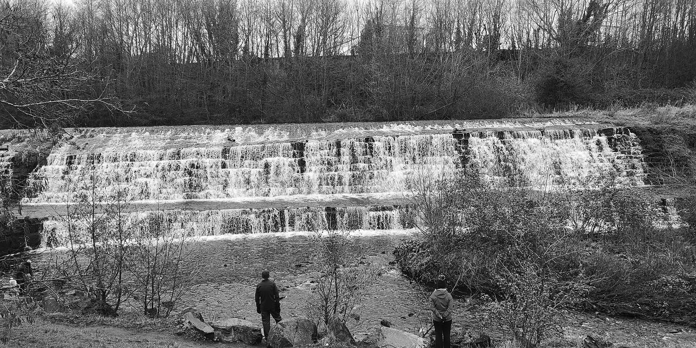
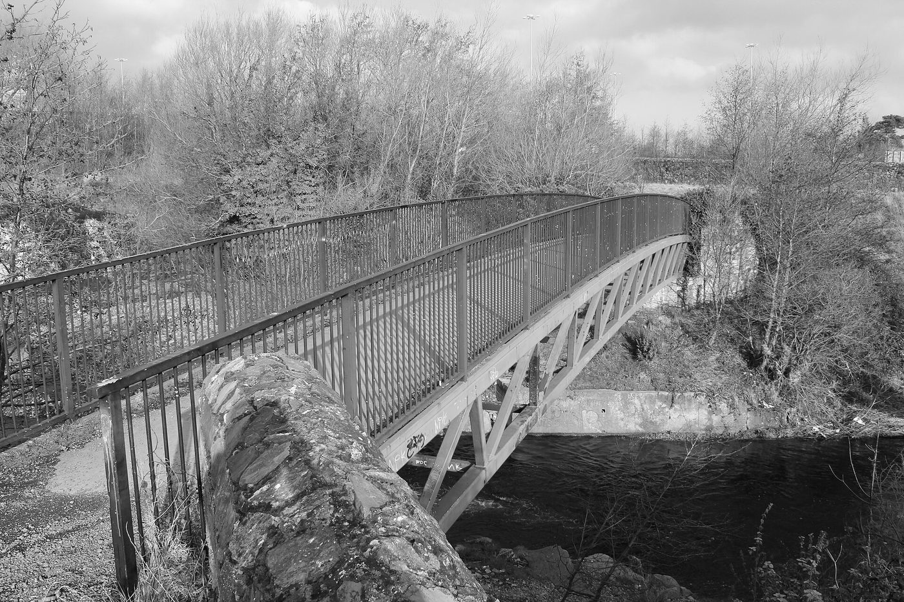
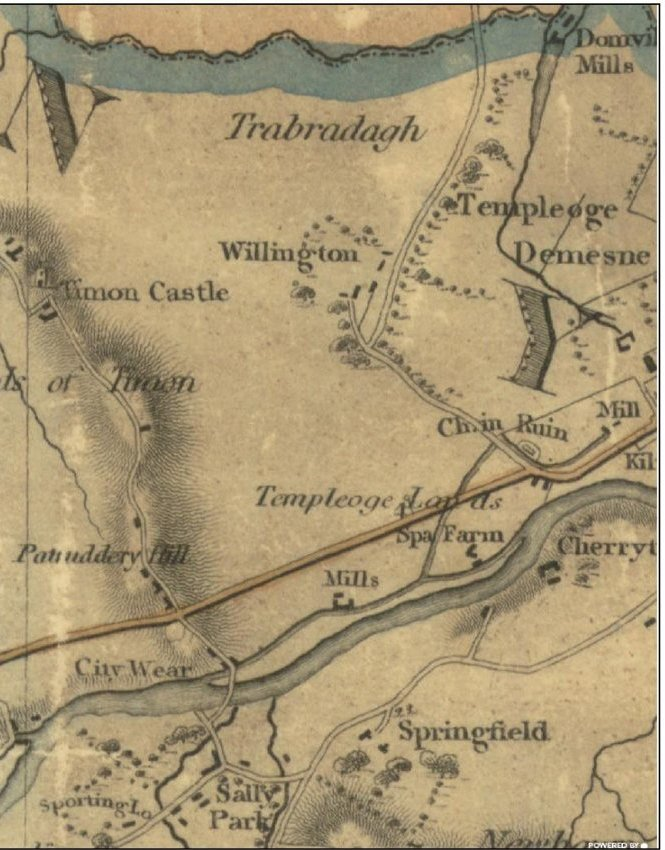
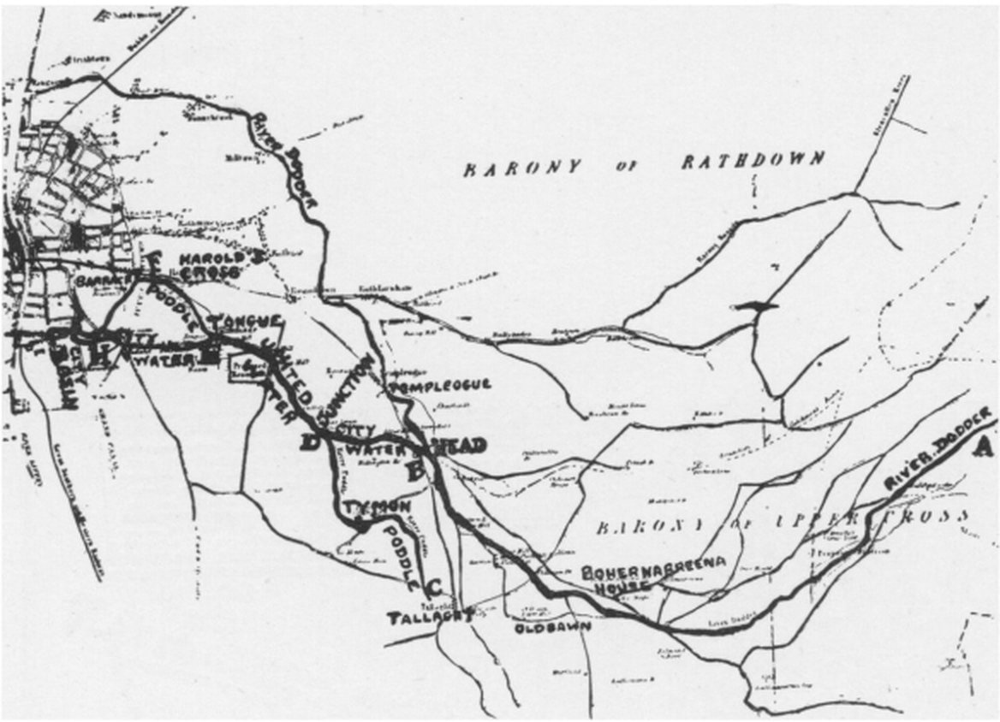
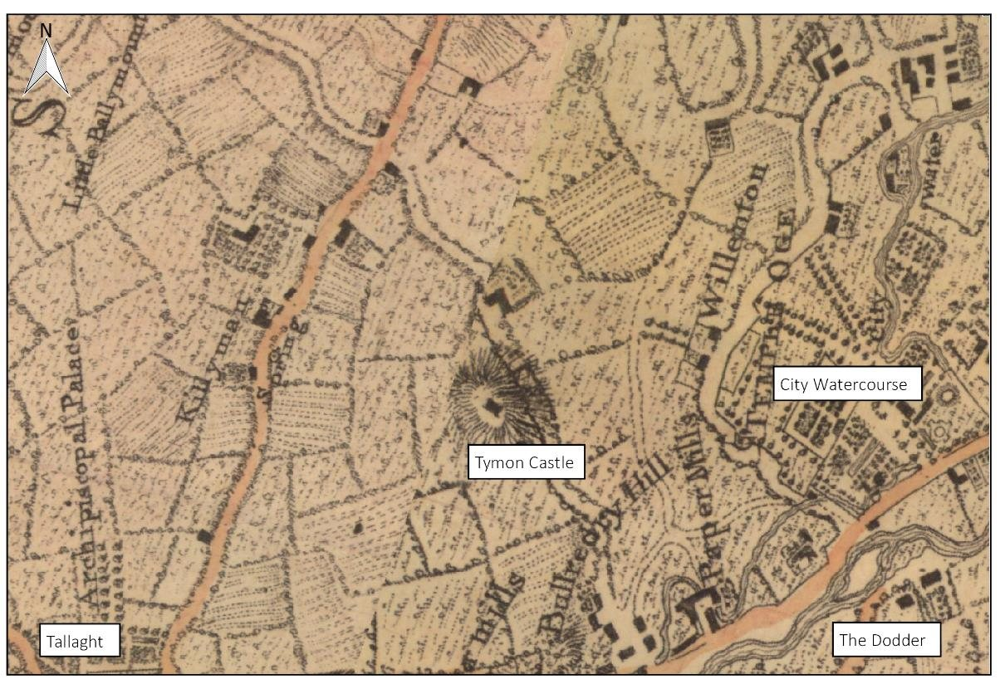

Stop 4 of 16 · Firhouse, on the Dodder
Balrothery Weir
Where medieval engineers turned the Dodder towards the city.
The City Weir
Balrothery Weir, also called Firhouse Weir, the City Weir or the Great Weir, sits on the Dodder in the Dodder Valley Park, close to where the M50 crosses the river. For more than 500 years it mattered to every citizen of Dublin, because most of the water they drank came over it.
Here the Dodder was turned out of its own bed and sent north-east in a man-made channel, the first stretch of the City Watercourse. About three kilometres on, that channel met the stream coming down from Tallaght, and from that meeting the river is the Poddle proper. Everything downstream, the Tongue, the mills of Kimmage and Harold’s Cross, the cisterns at James’s Street and the moat of Dublin Castle, depended on this weir.
The names are argued over. Firhouse is the village on the south bank and Balrothery the townland on the north bank, where the watercourse began. Older writers also spell it Balruddery. In 2021 a South Dublin County Council motion to rename it officially as Firhouse Weir was voted down, and the Record of Protected Structures lists it as “City Watercourse, Firhouse”.
Why the Dodder?
The Poddle is a small river with a small catchment, and in a dry summer it carried very little. By the early 13th century it had to supply St Thomas’s Abbey, the tenants of the cathedrals and a fast-growing Norman city, and it could not.
The Dodder was the obvious answer. It rises on Kippure, in the Wicklow Mountains, and runs about 29 kilometres to Ringsend, fast and well fed by mountain rain. At Firhouse it passes within three kilometres of the Poddle, and on higher ground, so water taken off here could run downhill all the way to the city.
Who built it, and when
The usual story is that the canons of St Thomas’s Abbey built the weir before 1244, to feed their mills and their own water supply, and that the citizens enlarged it in 1244. The sources do not agree on the dates, and we give them here side by side.
The firmest date is a writ of 29 April 1244. The justiciar, Maurice Fitzgerald, ordered the sheriff of Dublin to hold an inquiry “by twelve free and lawful men” into “whence water can be best and most conveniently taken from its course and conducted to the King’s city of Dublin”, at the citizens’ cost, and to report any damage it might do. The Dodder weir was chosen, and enlarged and repaired. In 1245 the King told John FitzGeffrey to finish his hall in Dublin Castle and to have water piped to it by the summer of 1246, which suggests the works were done by then.
Other writers give other dates. H. F. Berry (1891) puts the watercourse in the middle of the 13th century and wrote about an inquisition of 1258, which recent reports date to 1259, recording an agreement between the monks and the citizens. Rev. Myles Ronan (1927) says the watercourse was formed between 1245 and 1254. B. Mac Giolla Phádraig (1954) dates the weir to 1254. Simpson (1997), as summarised in the flood scheme’s heritage report, reads the evidence the other way: the monks had already diverted the Dodder at Firhouse, the 1244 works were the second branch at Harold’s Cross, and the weir could date from as early as the late 12th century.
How it works
A weir is a low wall across a river that raises the water behind it. At Firhouse the wall runs diagonally across the Dodder, which makes it longer and lets it hold up a wide, calm pool. On the north bank, at the head of that pool, a set of sluice gates opened into the City Watercourse. Raise the gates and water ran off into the channel; close them and the river carried on over the weir.
In normal weather nearly the whole river was turned into the watercourse. Writing in the 1870s, William Handcock said that except in floods “the whole river” went that way, and only the flood water went on down the old bed. Ronan reckoned that the city took an average of about 613,200 gallons a day, roughly 2.8 million litres, and that the Abbey mills took twice that.
From the sluices the channel ran across the fields, under the Tallaght road, past the old churchyard at Templeogue and through the grounds of Templeogue House, joining the Tallaght stream about a quarter of a mile north of Mount Down, near Whitehall. Mills crowded along it. In 1844 Robert Mallet counted 24 mills at work on the Dodder, 12 of them on the City Watercourse.
Guarding the water
A supply this long, running through private land, was easy to tamper with. The city appointed keepers for the stretch from the Dodder to the Tongue, usually a yeoman living near Tallaght or Templeogue: John Pylle of Templeogue in 1456 and a Walsh in 1491. Millers and landowners still cut holes in the banks to take more than their share.
Sometimes the water was cut off on purpose. Rebels following Silken Thomas broke the supply in 1534. The Talbots of Templeogue, through whose land it ran, blocked it in a quarrel with the mill owners; Weston St John Joyce dates this to 1573 and again 1689, other accounts to 1597. In the wars of the 1640s royalist forces are said to have cut it to leave the Cromwellian garrison in Dublin short of water and milling.
The most famous threat is a story about the Hellfire Club. In August 1738 Henry Barry, Lord Santry, ran a tavern porter, Laughlin Murphy, through with his sword in Palmerstown. He was tried by his fellow peers in 1739 and sentenced to death. His uncle, Sir Compton Domvile of Templeogue House, is said to have let it be known that he would turn off the city’s water where it crossed his land. Santry was reprieved and given a full pardon in 1740, and died in England in 1751. The threat is told by many writers but is best treated as legend; Joyce even says the authorities helped Santry escape, which does not match the record of the pardon.
By 1718 the water arriving in the city was badly fouled, and an inquiry traced the pollution to a paper mill and a tuck mill. The result was the 1719 Act “for cleansing and repairing the watercourse from the River Dodder to the City of Dublin”, which gave the Corporation much stronger powers over the whole channel.
Rebuilt over the centuries
What you see today is not medieval. In 1308 the mayor, John Le Decer, had the watercourse cleaned and its banks faced with stone, though it is not recorded whether he worked on the weir itself. The National Inventory of Architectural Heritage dates the present weir to about 1775, and says it is about 80 metres long and drops in three main stages from the weir pool to the river, with a group of sluice gates at the weir and nearby. Later accounts describe a final modernisation of the weir and sluices in the early 19th century, and an archaeologist in 2001 judged it largely remodelled in Victorian times.
That 2001 work, monitoring the removal of gravel above the weir for flood relief and the linear park, found masonry walls along the south bank and eight hollowed-out tree trunks in the riverbed. They were probably water pipes, like the 18th-century wooden pipes found under Dublin’s streets. Nothing older was found, and the report notes that the weir was quarried for river gravel until the 19th century.
Crossing the weir
Before the river was straightened and deepened in the 1840s you could drive across just below the weir. Afterwards the banks stood about 20 feet high, and the only way over in a flood was to wade along the top of the weir, which Handcock called dangerous. A wooden footbridge paid for by local subscription was swept away in a flood, and its planks were said to have floated down to Ringsend.
An iron lattice bridge followed around 1860, 20 feet above the riverbed. The present bridge was opened by South Dublin County Council in 1995.
The end of the watercourse
The weir’s job faded slowly. The Grand Canal began to supply the city basin in the 18th century; the flood scheme’s heritage report gives 1755, and Berry, quoted by Handcock, says the city relied on the Dodder until 1775. In the 19th century the Vartry and Bohernabreena reservoirs took over the drinking supply, and the watercourse was kept for mills and industry. Even in 1939 J. Hegarty could describe “the weir, the watercourse, the Tongue” as still in place and still doing some of their old work.
In the middle of the 20th century parts of the channel were piped. In the 1970s new housing at Templeogue and Firhouse cut through its line, and newspaper letters at the time warned that bad planning would bury it. The link from the Dodder to the Poddle was then allowed to dry out. Today only a short stub of channel leaves the weir and ends within about 100 metres.
Visiting today
The weir is in the Dodder Valley Park, between Firhouse and Balrothery, beside the M50 bridge over the Dodder. You can walk to it along the riverside path from Old Bawn or from Firhouse, both of which have parking. Stand on the 1995 footbridge for the best view of the falls, then look to the north bank for the old sluices and the start of the dry channel.
It is a protected structure, and the National Inventory rates it of regional importance for its archaeological, architectural and technical interest. From the weir, a path under the M50 takes you into Tymon Park and on to the Poddle itself.
The Dodder rises fast after heavy rain. Keep to the paths and the bridge, and do not try to cross on the weir.
Watch and read
- National Inventory of Architectural Heritage: Firhouse Weir (reg. no. 11215019)
- Excavations.ie: The Weir, Firhouse, 2001
- Weston St John Joyce, The Neighbourhood of Dublin: the old city water supply
- William Handcock, The History and Antiquities of Tallaght: the River Dodder
- Crumlin Walkinstown History: Balrothery (Firhouse) Weir, with newspaper articles
- Our Irish Heritage: Balrothery Weir, with photographs by Tallaght Community Council
- South Dublin County Council: Firhouse Weir
From the planning file
Facts from the flood scheme’s planning application and four local planning files.




